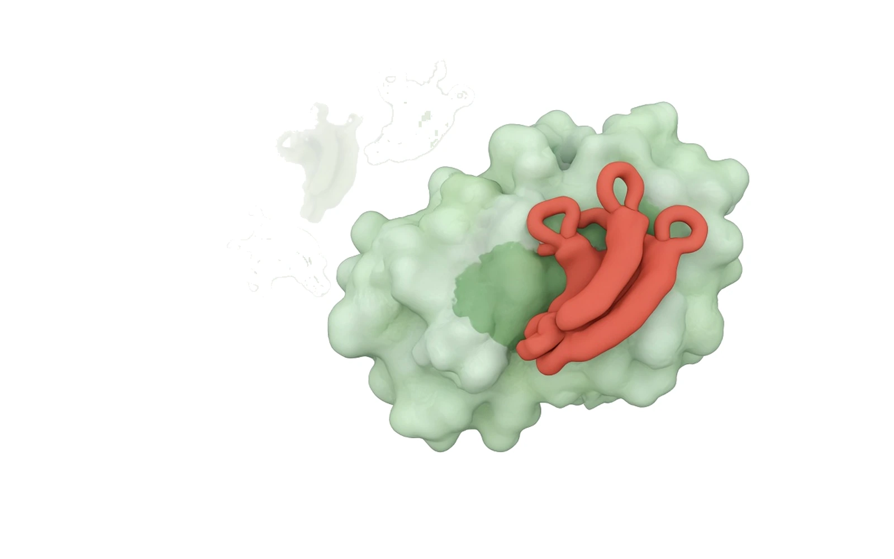
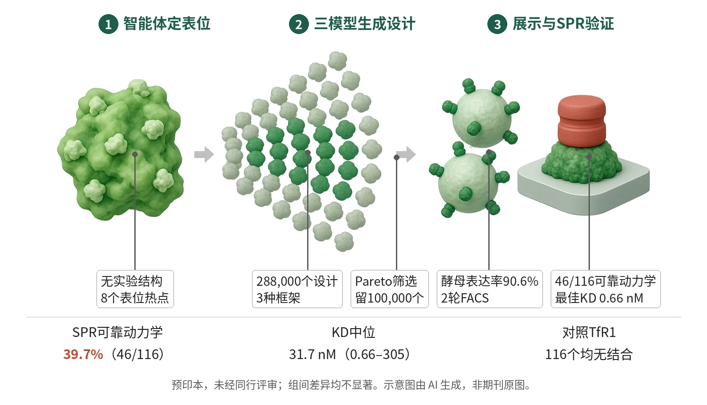

封面示意：赤陶红纳米抗体结合绿色抗原表面。图片由 AI 生成，非原文图片。
针对一个无结构、无既有抗体的DSRCT新靶点，Zhao等从头生成288,000个纳米抗体设计，116个候选经SPR表征有46个（39.7%）获可靠动力学，最佳KD为0.66 nM。

- 47例肿瘤测序定靶点
- 智能体推荐8个表位热点
- 三模型生成288,000个设计
- Pareto筛10万做酵母展示
- 116个候选SPR表征
示意图概括工作流：从肿瘤测序选出无结构、无既有抗体的新靶点，智能体在预测结构上标出八个表位热点，三种生成模型产出288,000个纳米抗体设计，经筛选后用酵母展示与SPR验证，46个获可靠动力学。示意图由 AI 生成，依据原文结果绘制，非期刊原图，不代表分子比例
研究背景与待解问题
单抗已是生物药主力，纳米抗体（VHH）因溶解性好、稳定性强、易工程化而扩展了可及形式。但传统发现方式——动物免疫、噬菌体展示、合成文库——对可及序列空间有限制，作者引用的文献显示一轮发现通常需要6–12个月，且几乎无法事先指定表位。
机器学习带来了结构预测与从头设计工具，但文献报道的实验命中率在0.1%到39%之间，且命中定义不一致、靶点难度不同，难以直接比较。Zhao等在bioRxiv预印本（未经同行评审）中把这些工具串成一条由智能体引导的流水线，并在一个新癌靶点上做首轮验证。
研究设计
靶点来自纪念斯隆-凯特琳癌症中心47例促结缔组织增生性小圆细胞瘤（DSRCT）手术标本的RNA测序：与5例健康腹膜组织比较做差异表达，再限定为EWSR1::WT1上调、预测位于细胞表面、且在GTEx正常组织中无明显表达的基因，取其中上调最强者。该靶点既无实验解析结构、也无任何公开抗体信息，设计只能从序列出发。
工作流分四步：用热点推荐智能体（基于Claude Sonnet 4，整合IEDB、PFAM、表面可及性等工具输出）提出8个表位热点；用RFantibody、IgGM、mBER在四种折叠方法给出的预测结构上生成设计；多指标打分后由候选选择智能体做Pareto筛选；最后用酵母表面展示＋FACS＋SPR验证。研究未为任何组间比较设计效能。
核心结果
两轮富集后116个入SPR
设计参数以组合方式变化：8个计算识别的表位热点、3种纳米抗体框架、4至13个氨基酸的CDR III长度，并在三种生成模型中全部采样，共生成288,000个设计，再由候选选择智能体做多目标Pareto过滤，留下100,000个进入酵母表面展示筛选。酵母文库VHH表达率为90.6%，经2轮FACS富集后按平均荧光强度挑出116个候选进入SPR。
46个获可靠动力学
全部116个候选均成功表达，Results给出中位产量184 mg/L（34.5–200 mg/L），且对无关抗原转铁蛋白受体（TfR1）均无结合。其中46个（39.7%）给出Rmax≥30 RU的可靠动力学拟合，KD从0.66 nM到305 nM，中位31.7 nM；最佳候选PRJ266_044的KD为0.66 nM，次优PRJ266_080为2.3 nM。另有29个候选响应可检出但幅度低（Rmax<30 RU），作者明确其KD只能视为暂定估计。
框架决定成败
在46个高信号结合体中，三种框架只有两种产出，且分布高度偏斜：框架B占45个。IgGM与mBER都有贡献，IgGM数量更多、中位KD更低（n=33，中位28.0 nM对mBER n=13、43.9 nM），但差异不显著（p=0.311）。RFantibody的三个结合体KD为0.13、0.62和5.5 nM，但Rmax仅11.1–16.4 RU，全部低于阈值。
热点可回收但不等于表位
八个热点条件组都回收到经SPR确认的结合体，但作者强调真实结合界面未必与条件热点一致；各组中位KD从热点G的10.3 nM到热点B的43.9 nM，组间无显著差异（p=0.725）。五种预测结构之间中位亲和力为26.5–47.5 nM（p=0.330），作者指出46个结合体分到五组后效能严重不足。
机制解读
原文实验证明：可由实验直接支持的是流程环节的可回收性：Boltz-2仅凭序列共折叠，就把设计的CDR接触集中在条件热点附近，说明表位偏好被编码进序列并可被独立结构预测找回；作者同时指出Boltz-2与设计模型共享PDB训练数据，不能排除共同偏倚。五种预测结构两两TM-score均超过0.5，AlphaFold2最分歧（0.62–0.66）。
热点推荐能力另在SAbDab复合物上单独评估：测试集按70%一致性聚类取n=320，另有n=76的留出集；智能体每个抗原给出5个互不重叠的10氨基酸区域，与任一真实表位残基重叠即记为命中，留出集上top-5准确率约80%。
作者推测：作者推测，热点B与热点F、G可能构成一个不连续表位的组成部分，这可解释几个区域间重叠的接触信号；他们也认为低KD结合体在这三组中的富集只能作为提出假设的线索，因为每组样本量很小。框架B的压倒性占比被解释为框架性质可能决定计算设计能否转化为强结合体。
局限与不确定
- 作者自述两条局限：生物物理性质评估有限，目前依赖Boltz-2共折叠和MochiBind亲和力估计等计算指标，可能无法刻画构象稳定性或动态不稳定；支架多样性有限，工作流只用了RFantibody、IgGM和mBER三种生成方法，可能限制对其他支架类别的探索。
- 结论的证据层级有限：SPR只能确认结合，不能判定表位，作者称需要实验表位作图；热带亲和力差异的组间比较（生成模型p=0.311、结构方法p=0.330、热点p=0.725）均不显著且效能不足，不能用于挑选方法。
- 这是bioRxiv预印本，未经同行评审，且只完成首轮设计—构建—测试；热稳定性、多反应性等开发性表征和细胞层面验证尚未进行，29个低信号候选的亲和力需正交方法确认。
临床/产业意义
若后续周期与同行评审证实，这条流水线说明在没有实验结构、也没有既有抗体的靶点上，智能体定表位加多模型从头设计可以在首轮就拿到纳摩尔到亚纳摩尔的纳米抗体，把筛选规模从传统文库的生物选择转为可指定表位的计算设计。
对团队的实际启示是把框架和生成方法当作要刻意多样化的设计变量，并以实验数据回流训练靶点专属模型；作者已规划细胞验证与开发性表征，用于后续设计—构建—测试—学习循环。